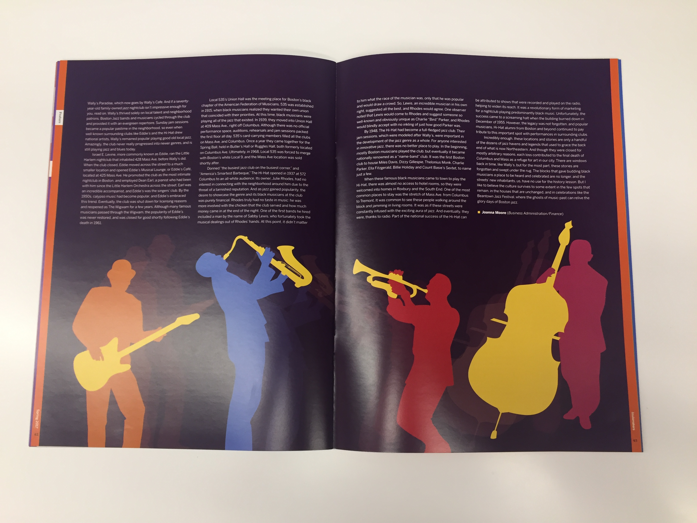
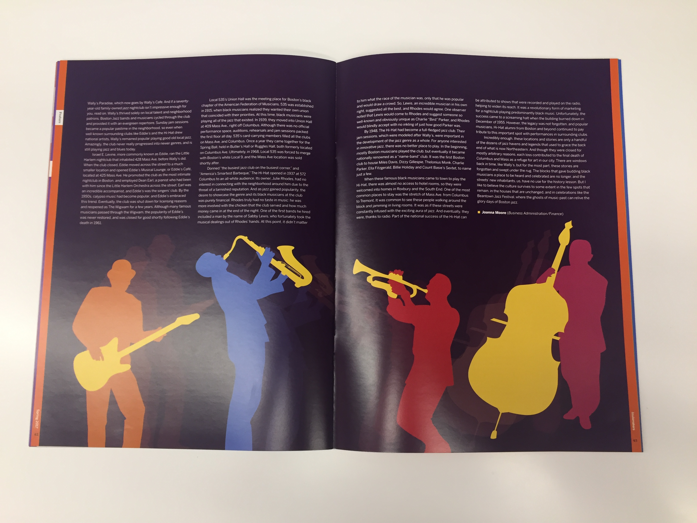
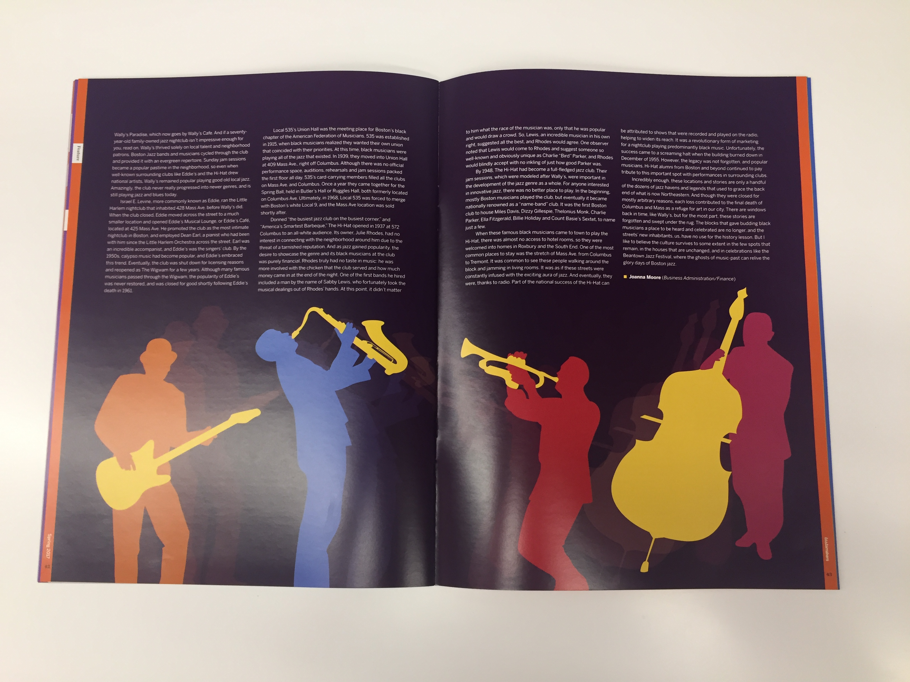

Editorial Designer for music magazine.
Tastemakers is a Northeastern University based magazine that allows students to have a voice in the music industry. As a designer, I began with a style guide and worked from there. During meetings, we showed off our work and received feedback on what we could improve for next week. All of the final spreads are combined and printed to create the bi-semester magazine.
For my first issue I choose to design a spread about Jazz on Columbus Avenue. I decieded to first focus on colors that would elicit a jazz-y feeling. I decided on a deep purple for the background and bright colors for any additional elements. When reading through the article, the writer really highlighted the fact that Columbus Avenue is so close to Northeastern. By having 'Columbus Ave.' part of the title look like a street sign, I continued to show the signifigance of location. For the 2-page spread, I immediately thought of the idea of having silhouettes playing well-known jazz instruments. The "movement" of this figures was added towards the end to make the figures feel more alive. 

I was very happy with my experience with Tastemakers. So far I have only been on the team for one issue, however I look forward to continuing my work with them in the future.
For my first issue I choose to design a spread about Jazz on Columbus Avenue. I decieded to first focus on colors that would elicit a jazz-y feeling. I decided on a deep purple for the background and bright colors for any additional elements. When reading through the article, the writer really highlighted the fact that Columbus Avenue is so close to Northeastern. By having 'Columbus Ave.' part of the title look like a street sign, I continued to show the signifigance of location. For the 2-page spread, I immediately thought of the idea of having silhouettes playing well-known jazz instruments. The "movement" of this figures was added towards the end to make the figures feel more alive.

Columbus Avenue Jazz, Adobe Illustrator and InDesign
I was very happy with my experience with Tastemakers. So far I have only been on the team for one issue, however I look forward to continuing my work with them in the future.